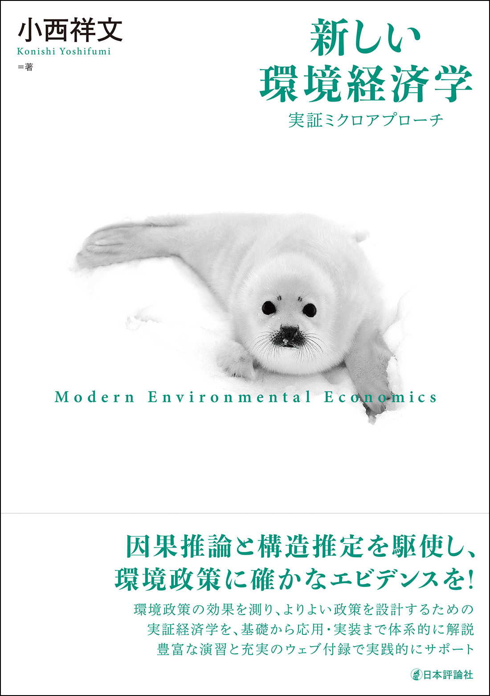

新しい環境経済学：実証ミクロアプローチ
小西祥文，日本評論社，2026年，350頁．
本書は，環境政策を正確に評価し，より効果的に設計するための「新しい環境経済学」を提示する教科書です．因果推論と構造推定を補完的に用いる「実証ミクロアプローチ」を軸に，企業・消費者・技術の反応，政策設計とEBPM，さらには気候変動の社会的費用までを，理論と実証を往復しながら体系的に解説します．
本書を貫くのは，環境問題の性質や政策ニーズが，必要とされる研究デザインを決めるという考え方，そして，ミクロレベルの信頼できるエビデンスが，マクロ的な政策判断を内側から更新するという考え方です．したがって本書は，既存の実証手法を環境経済学へ応用したものではなく，「実証ミクロアプローチによって環境経済学そのものを再構成した本」となっています．
本書が重視するのは，「この問いに答えるには，どのような研究デザインが必要か」を考える力を育てることです．実データを用いた豊富な課題と実践編を通じて，政策ニーズから問いを立て，反実仮想を構築し，エビデンスを批判的に評価し，それをよりよい政策設計へ結びつけるまでの，環境経済学者の思考過程を追体験できるよう構成しました．初級・中級の教科書から研究論文へ進み，自ら実証研究や政策分析に取り組むための橋渡しとなることを目指しています．
読者の方へ
サポートサイト（https://keisemi.github.io/empirical_environmental_economics/）では，第 I 部～第 III 部末に配置された課題と【実践編】で行う分析を実行する Stata/R のコードとデータを提供している．
This book covers modern environmental economics for rigorously evaluating environmental policies and designing more effective ones. Applying modern methods in empirical microeconomics (causal inference and structural estimation), it offers systematic guidance on how firms, consumers, and technologies respond to environmental policy, how evidence can inform policy design and evidence-based policymaking, and how recent empirical advances contribute to the estimation of the social cost of climate change. Throughout, theory and evidence are brought into continual dialogue.
The book is guided by two central ideas: that the nature of an environmental problem and the needs of policymakers should determine the appropriate research design, and that credible micro-level evidence can update macro-level policy judgments from within. It is therefore not simply a book that applies existing empirical methods to environmental economics. Rather, it reconstructs environmental economics itself through an empirical microeconomic approach.
Above all, the book aims to develop the ability to ask: “What kind of research design is needed to answer this question?” Through extensive exercises, hands-on modules, and analyses using real-world data, readers are invited to retrace the reasoning process of an environmental economist—from identifying policy needs and formulating research questions, to constructing counterfactuals, critically evaluating evidence, and translating that evidence into better policy design. In doing so, the book seeks to provide a bridge from introductory and intermediate textbooks to the research literature, and ultimately to independent empirical research and policy analysis.